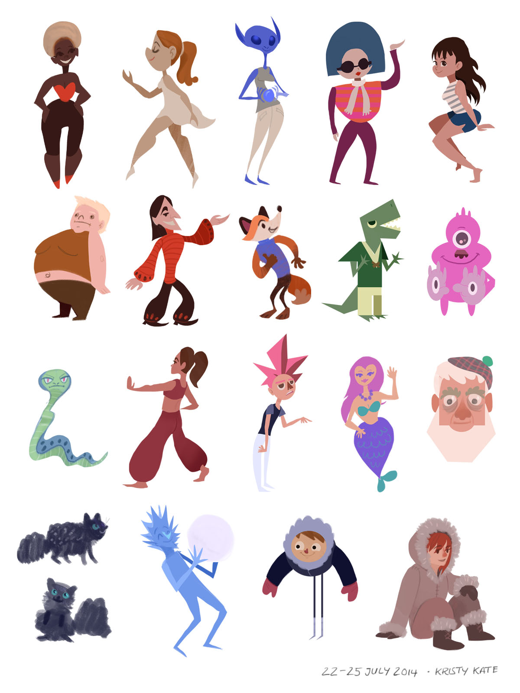
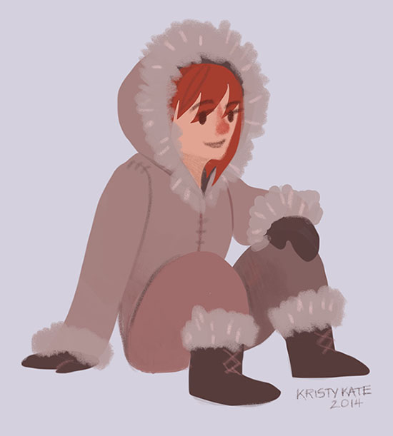
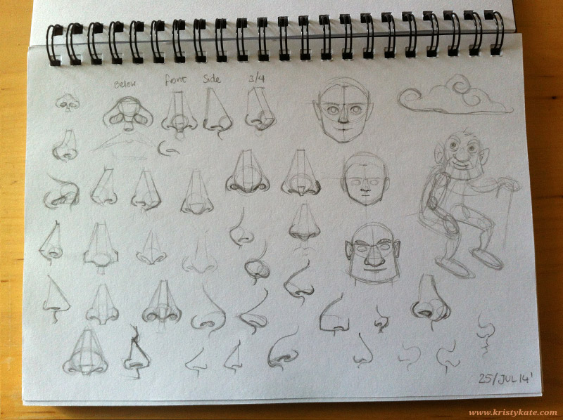

Week 18 Studies
July 21st - 27th
Decided to try something different this week and experiment with creating random characters using the lasso tool in Photoshop.
It was so much fun playing around with random shapes and colours to see what characters emerged!

Here's my personal favourite of the lot:

Oh, and I also practiced drawing noses. Because they're silly.

All the best!
x Kristy Kate
+ + +
Have any thoughts on my studies? Join me on my creative journey and share your own by leaving a comment (critique welcome) or connecting via Twitter or Facebook.